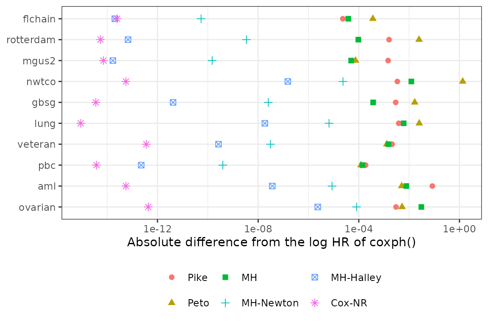
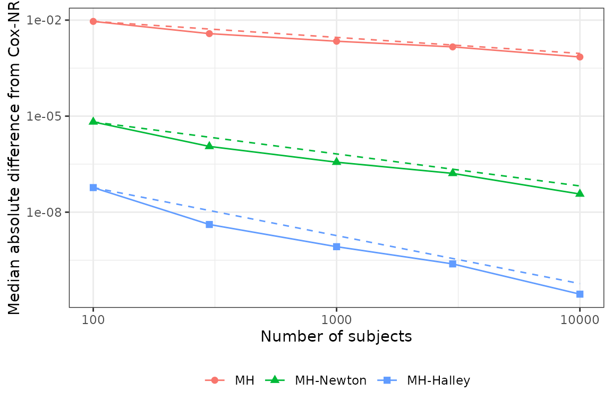

This article compares the estimates of onestepcox with
those of the survival package: the Cox estimates of
coxph() on data sets of the survival package,
the Peto and Pike estimates with the observed and expected numbers of
events of survdiff(), and, in simulated data, the
difference from the Cox estimate as the sample size grows.
Data sets
The data sets below have a two-group variable. For pbc,
the randomized patients are used and death is the event.
pbc_rand <- subset(survival::pbc, !is.na(trt))
pbc_rand$dead <- as.integer(pbc_rand$status == 2)
sets <- data.frame(
name = c("aml", "ovarian", "veteran", "lung", "pbc", "gbsg", "mgus2",
"rotterdam", "nwtco", "flchain"),
time = c("time", "futime", "time", "time", "time", "rfstime", "futime",
"rtime", "edrel", "futime"),
event = c("status", "fustat", "status", "status", "dead", "status",
"death", "recur", "rel", "death"),
group = c("x", "rx", "trt", "sex", "trt", "hormon", "sex", "hormon",
"histol", "sex")
)
data_of <- list(aml = survival::aml, ovarian = survival::ovarian,
veteran = survival::veteran, lung = survival::lung,
pbc = pbc_rand, gbsg = survival::gbsg,
mgus2 = survival::mgus2, rotterdam = survival::rotterdam,
nwtco = survival::nwtco, flchain = survival::flchain)
sets
#> name time event group
#> 1 aml time status x
#> 2 ovarian futime fustat rx
#> 3 veteran time status trt
#> 4 lung time status sex
#> 5 pbc time dead trt
#> 6 gbsg rfstime status hormon
#> 7 mgus2 futime death sex
#> 8 rotterdam rtime recur hormon
#> 9 nwtco edrel rel histol
#> 10 flchain futime death sexcoxph() is called with the group as a factor, so that
its coefficient compares the second level with the first, as
EstHR() does, and with a tight convergence tolerance. With
timefix = FALSE, times are tied only when they are exactly
equal, as in EstHR().
formula_of <- function(s, cox = FALSE, strata = NULL) {
rhs <- if (cox) paste0("factor(", s$group, ")") else s$group
if (!is.null(strata)) rhs <- paste0(rhs, " + strata(", strata, ")")
as.formula(paste0("Surv(", s$time, ", ", s$event, ") ~ ", rhs))
}
methods <- c("Pike", "Peto", "MH", "MH_Newton", "MH_Halley", "Pike_Halley",
"Cox_NR")
tight <- coxph.control(eps = 1e-12, toler.chol = 1e-13, iter.max = 100,
timefix = FALSE)
compare <- function(i, ties = "efron", strata = NULL) {
s <- sets[i, ]
d <- data_of[[s$name]]
est <- EstHR(formula_of(s, strata = strata), data = d, method = methods,
ties = ties)
fit <- coxph(formula_of(s, cox = TRUE, strata = strata), data = d,
ties = ties, control = tight)
data.frame(dataset = s$name, n = sum(attr(est, "n")),
events = sum(attr(est, "events")), method = rownames(est),
dev = abs(est[, "coef"] - unname(coef(fit))),
se_ratio = est[, "se(coef)"] / sqrt(vcov(fit)[1, 1]),
cox_hr = unname(exp(coef(fit))), row.names = NULL)
}
efron <- do.call(rbind, lapply(seq_len(nrow(sets)), compare))Cox estimates of coxph()
The table gives, for each data set, the numbers of subjects and
events, the hazard ratio of coxph(), and the absolute
difference between the log hazard ratio of each method and that of
coxph() (Efron handling of ties).
tab <- unique(efron[, c("dataset", "n", "events", "cox_hr")])
tab <- tab[order(tab$events), ]
shown <- c("Pike", "Peto", "MH", "MH_Halley", "Cox_NR")
for (m in shown) {
tab[[m]] <- vapply(tab$dataset, function(x) {
fmt_num(efron$dev[efron$dataset == x & efron$method == m])
}, character(1))
}
tab$n <- format(tab$n, big.mark = ",")
tab$events <- format(tab$events, big.mark = ",")
tab$cox_hr <- sprintf("%.3f", tab$cox_hr)
knitr::kable(tab, row.names = FALSE, align = "lrrrrrrrr",
col.names = c("Data", "n", "Events", "HR (coxph)",
gsub("_", "-", shown)),
caption = "Absolute difference from the log hazard ratio of coxph()")| Data | n | Events | HR (coxph) | Pike | Peto | MH | MH-Halley | Cox-NR |
|---|---|---|---|---|---|---|---|---|
| ovarian | 26 | 12 | 0.551 | 0.003 | 0.0052 | 0.031 | 2.3 × 10-6 | 4.3 × 10-13 |
| aml | 23 | 18 | 2.498 | 0.084 | 0.0051 | 0.0077 | 3.6 × 10-8 | 5.6 × 10-14 |
| pbc | 312 | 125 | 0.944 | 1.9 × 10-4 | 1.2 × 10-4 | 1.4 × 10-4 | 2.3 × 10-13 | 3.8 × 10-15 |
| veteran | 137 | 128 | 1.018 | 0.0021 | 0.0013 | 0.0015 | 2.7 × 10-10 | 3.6 × 10-13 |
| lung | 228 | 165 | 0.588 | 0.0039 | 0.025 | 0.0061 | 1.8 × 10-8 | 8.9 × 10-16 |
| gbsg | 686 | 299 | 0.695 | 0.0029 | 0.017 | 3.7 × 10-4 | 4.2 × 10-12 | 3.6 × 10-15 |
| nwtco | 4,028 | 571 | 5.105 | 0.0034 | 1.3 | 0.012 | 1.5 × 10-7 | 5.6 × 10-14 |
| mgus2 | 1,384 | 963 | 1.224 | 0.0015 | 7.4 × 10-5 | 5 × 10-5 | 1.7 × 10-14 | 7.1 × 10-15 |
| rotterdam | 2,982 | 1,518 | 1.276 | 0.0016 | 0.025 | 9.6 × 10-5 | 6.8 × 10-14 | 5.4 × 10-15 |
| flchain | 7,874 | 2,169 | 1.088 | 2.3 × 10-5 | 3.6 × 10-4 | 3.8 × 10-5 | 2 × 10-14 | 2.5 × 10-14 |
Over the 10 data sets, the Pike, Peto, and Mantel-Haenszel estimates
differ from the Cox estimate by up to 0.084, 1.3, and 0.031 on the log
scale. One Halley step from the Mantel-Haenszel estimate reduces the
largest difference to 2.3 × 10-6. "Cox_NR", the
Newton-Raphson iteration of the package, agrees with
coxph() to 4.3 × 10-13. The ratio of the
standard errors of MH-Halley and coxph() differs from 1 by
at most 5.8 × 10-7.
The figure shows the same differences on a logarithmic scale, with the data sets ordered by the number of events. Differences below 1 × 10-16 are drawn at that value.
plot_d <- subset(efron, method != "Pike_Halley")
plot_d$dataset <- factor(plot_d$dataset, levels = tab$dataset)
plot_d$method <- factor(plot_d$method,
levels = c("Pike", "Peto", "MH", "MH_Newton",
"MH_Halley", "Cox_NR"),
labels = c("Pike", "Peto", "MH", "MH-Newton",
"MH-Halley", "Cox-NR"))
ggplot(plot_d, aes(x = pmax(dev, 1e-16), y = dataset, colour = method,
shape = method)) +
geom_point(size = 2) +
scale_x_log10() +
labs(x = "Absolute difference from the log HR of coxph()", y = NULL,
colour = NULL, shape = NULL) +
theme_bw() +
theme(legend.position = "bottom")
Breslow handling of ties and strata
The same comparison with ties = "breslow" in both
packages, and with strata (grade for gbsg,
celltype for veteran, and meno
for rotterdam) under the Efron handling, gives the largest
differences below.
breslow <- do.call(rbind, lapply(seq_len(nrow(sets)), compare,
ties = "breslow"))
strata_of <- c(gbsg = "grade", veteran = "celltype", rotterdam = "meno")
stratified <- do.call(rbind, lapply(names(strata_of), function(nm) {
compare(match(nm, sets$name), strata = strata_of[[nm]])
}))
settings <- list(Efron = efron, Breslow = breslow,
"Efron, stratified" = stratified)
largest <- sapply(settings, function(x) {
vapply(methods, function(m) fmt_num(max(dev_of(x, m))), character(1))
})
rownames(largest) <- gsub("_", "-", methods)
knitr::kable(largest, align = "rrr",
caption = "Largest absolute difference from the log hazard ratio of coxph()")| Efron | Breslow | Efron, stratified | |
|---|---|---|---|
| Pike | 0.084 | 0.072 | 0.037 |
| Peto | 1.3 | 1.3 | 0.022 |
| MH | 0.031 | 0.031 | 0.01 |
| MH-Newton | 8.2 × 10-5 | 8.2 × 10-5 | 4.2 × 10-7 |
| MH-Halley | 2.3 × 10-6 | 2.3 × 10-6 | 6 × 10-8 |
| Pike-Halley | 4.6 × 10-5 | 3 × 10-5 | 3.1 × 10-6 |
| Cox-NR | 4.3 × 10-13 | 5.1 × 10-13 | 8 × 10-15 |
Peto and Pike estimates from survdiff()
The Peto estimate is (O_T - E_T) / V and the Pike
estimate is log((O_T / E_T) / (O_C / E_C)), where
O and E are the observed and expected numbers
of events of the log-rank test and V is its hypergeometric
variance. survdiff() returns these quantities, so the two
estimates and their standard errors, V^(-1/2) and
(1 / E_T + 1 / E_C)^(1/2), can be computed from them
independently of onestepcox.
logrank <- do.call(rbind, lapply(seq_len(nrow(sets)), function(i) {
s <- sets[i, ]
d <- data_of[[s$name]]
sd <- survdiff(formula_of(s, cox = TRUE), data = d)
O <- sd$obs
E <- sd$exp
V <- sd$var[2, 2]
est <- EstHR(formula_of(s), data = d, method = c("Peto", "Pike"))
data.frame(
dataset = s$name,
peto = abs((O[2] - E[2]) / V - est["Peto", "coef"]),
peto_se = abs(1 / sqrt(V) - est["Peto", "se(coef)"]),
pike = abs(log((O[2] / E[2]) / (O[1] / E[1])) - est["Pike", "coef"]),
pike_se = abs(sqrt(1 / E[1] + 1 / E[2]) - est["Pike", "se(coef)"])
)
}))
logrank_tab <- logrank
for (v in c("peto", "peto_se", "pike", "pike_se")) {
logrank_tab[[v]] <- vapply(logrank[[v]], fmt_num, character(1))
}
knitr::kable(logrank_tab, row.names = FALSE, align = "lrrrr",
col.names = c("Data", "Peto", "SE of Peto", "Pike",
"SE of Pike"),
caption = "Absolute difference from the values computed from survdiff()")| Data | Peto | SE of Peto | Pike | SE of Pike |
|---|---|---|---|---|
| aml | 0 | 0 | 2.2 × 10-16 | 0 |
| ovarian | 1.1 × 10-16 | 0 | 0 | 0 |
| veteran | 7 × 10-16 | 2.8 × 10-17 | 4.4 × 10-16 | 0 |
| lung | 3.3 × 10-16 | 2.8 × 10-17 | 0 | 0 |
| pbc | 1.4 × 10-15 | 8.3 × 10-17 | 1.3 × 10-15 | 0 |
| gbsg | 1.4 × 10-15 | 2.8 × 10-17 | 8.3 × 10-16 | 2.8 × 10-17 |
| mgus2 | 5.3 × 10-16 | 1.4 × 10-17 | 5.6 × 10-16 | 0 |
| rotterdam | 7.8 × 10-16 | 5.6 × 10-17 | 1 × 10-15 | 1.4 × 10-17 |
| nwtco | 1.3 × 10-15 | 2.8 × 10-17 | 2.2 × 10-16 | 2.8 × 10-17 |
| flchain | 1.2 × 10-15 | 2.1 × 10-17 | 6.1 × 10-16 | 6.9 × 10-18 |
The largest of these differences is 1.4 × 10-15, which is of the size of rounding error.
Difference from the Cox estimate as the sample size grows
In simulated trials of increasing size, the difference between each
estimate and the Cox estimate shrinks at a rate set by the error of its
anchor and the order of its correction: n^(-1/2) for the
Mantel-Haenszel estimate, n^(-1) for one Newton step, and
n^(-3/2) for one Halley step. The reference is
"Cox_NR", the root of the score found by Newton-Raphson
iteration on the same risk-set summaries. The iteration stops after a
step smaller than tol (1 × 10-12 by default),
and because Newton-Raphson iteration converges quadratically, the error
left after that step is far smaller than tol. The dashed
lines have the slopes of these orders and pass through the median at the
smallest sample size.
ns <- c(100, 300, 1000, 3000, 10000)
reps <- 100
hr_conv <- 2
event_frac <- 0.75
conv_methods <- c("MH", "MH_Newton", "MH_Halley", "Cox_NR")
conv <- do.call(rbind, lapply(seq_along(ns), function(i) {
n <- ns[i]
sim <- as.data.frame(GenSimData(nsim = reps, n_T = n / 2, n_C = n / 2,
hazard_C = log(2) / 18, HR = hr_conv,
a = 12, E = event_frac * n, seed = i))
do.call(rbind, lapply(split(sim, sim$simID), function(d) {
est <- EstHR(d$time, d$event, d$group, control = "C",
method = conv_methods)
m <- setdiff(conv_methods, "Cox_NR")
data.frame(n = n, method = m,
dev = abs(est[m, "coef"] - est["Cox_NR", "coef"]))
}))
}))
med <- aggregate(dev ~ n + method, data = conv, FUN = median)
slope <- function(m) {
unname(coef(lm(log10(dev) ~ log10(n), data = med[med$method == m, ]))[2])
}
at_max_n <- function(m) {
x <- med[med$method == m, ]
x$dev[which.max(x$n)]
}
rates <- c(MH = -1 / 2, MH_Newton = -1, MH_Halley = -3 / 2)
ref_lines <- do.call(rbind, lapply(names(rates), function(m) {
x <- med[med$method == m, ]
x0 <- x[which.min(x$n), ]
data.frame(n = ns, method = m, dev = x0$dev * (ns / x0$n)^rates[[m]])
}))
relabel <- function(x) {
x$method <- factor(x$method,
levels = c("MH", "MH_Newton", "MH_Halley"),
labels = c("MH", "MH-Newton", "MH-Halley"))
x
}
ggplot(relabel(med), aes(x = n, y = pmax(dev, 1e-16), colour = method,
shape = method)) +
geom_line(data = relabel(ref_lines), linetype = "dashed",
show.legend = FALSE) +
geom_point(size = 2) +
geom_line() +
scale_x_log10() +
scale_y_log10() +
labs(x = "Number of subjects",
y = "Median absolute difference from Cox-NR",
colour = NULL, shape = NULL) +
theme_bw() +
theme(legend.position = "bottom")
With 100 trials for each of the 5 sample sizes from 100 to 10,000
(hazard ratio 2, with the analysis when a fraction 0.75 of the subjects
have had an event), the slopes of the medians on the log-log scale are
-0.53 for the Mantel-Haenszel estimate, -1.07 for one Newton step, and
-1.58 for one Halley step. With 10,000 subjects, the median difference
of MH-Halley is 2.7 × 10-11. coxph() agrees with
"Cox_NR" on the data sets above (first table), but it stops
when the relative change of the log partial likelihood is small rather
than when the step is small, which is why these articles use
"Cox_NR" as the reference.
Validation scripts of the package
The package also comes with scripts that compare all estimators with
an independent Python implementation on simulated data sets with ties
and strata, check LimitHR() against large-sample
simulations, and reproduce published results (folders
validation and reproduce of the installed
package). Each script writes its checks with a status (PASS, EXPLAINED,
FAIL, or INFO), and summarize_validation.R counts them. The
counts recorded when the scripts were last run are:
summary_file <- system.file("validation", "results", "summary.csv",
package = "onestepcox", mustWork = TRUE)
knitr::kable(utils::read.csv(summary_file))| file | checks | PASS | EXPLAINED | FAIL | INFO |
|---|---|---|---|---|---|
| inst/reproduce/results/Berry1991_figure1.csv | 26 | 26 | 0 | 0 | 0 |
| inst/reproduce/results/TherneauGrambsch2000.csv | 24 | 24 | 0 | 0 | 0 |
| inst/validation/results/validate_LimitHR.csv | 135 | 30 | 0 | 0 | 105 |
| inst/validation/results/validate_python.csv | 8932 | 8920 | 0 | 0 | 12 |